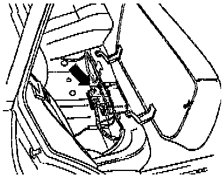

Operation CHARM
: Car repair manuals for everyone.
Home
>>
Volkswagen
>>
1997
>>
GTI (1H1) V6-2.8L (AAA)
>>
Repair and Diagnosis
>>
Relays and Modules
>>
Relays and Modules - Transmission and Drivetrain
>>
Relays and Modules - A/T
>>
Control Module
>>
Locations
>>
01M Transmission
01M Transmission

The Transmission Control Module
(TCM)
-J217- is located under the rear seat.